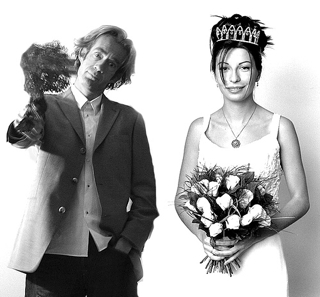
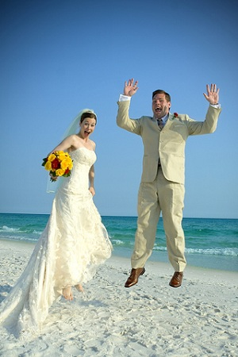
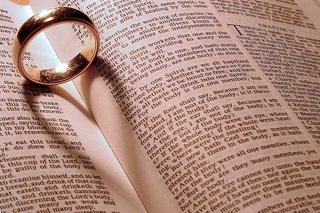
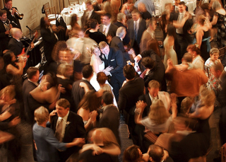
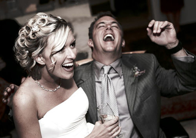

One of the most helpful tips You’ve been given about Wedding Photography is to get the couple to think ahead about the shots that they’d like you to capture on the day and compile a list so that you can check them off. This is particularly helpful in the family shots. There’s nothing worse than getting the photos back and realizing you didn’t photograph the happy couple with grandma!
You can find the family photo part of the day can be quite stressful. People are going everywhere, you’re unaware of the different family dynamics at play and people are in a ‘festive spirit’ (and have often been drinking a few spirits) to the point where it can be quite chaotic. Get the couple to nominate a family member (or one for each side of the family) who can be the ‘director’ of the shoot. They can round everyone up, help get them in the shot and keep things moving so that the couple can get back to the party.

Visit the locations of the different places that you’ll be shooting before the big day. While sure most Pros don’t do this – You find it really helpful to know where we’re going, have an idea of a few positions for shots and to know how the light might come into play. On one or two weddings even visited locations with the couples and took a few test shots (these made nice ‘engagement photos’).
So much can go wrong on the day – so you need to be well prepared. Have a backup plan (in case of bad weather), have batteries charged, memory cards blank, think about routes and time to get to places and get an itinerary of the full day so you know what’s happening next. If you can, attend the rehearsal of the ceremony where you’ll gather a lot of great information about possible positions to shoot from, the lighting, the order of the ceremony etc
Show them your work/style. Find out what they are wanting to achieve, how many shots they want, what key things they want to be recorded, how the shots will be used (print etc). If you’re charging them for the event, make sure you have the agreement of price in place up front.
Beeps during speeches, the kiss and vows don’t add to the event. Switch off sound before hand and keep it off.

Photograph rings, backs of dresses, shoes, flowers, table settings, menus etc – these help give the end album an extra dimension. Flick through a wedding magazine in a news stand for a little inspiration.
Beg, borrow, hire or steal an extra camera for the day – set it up with a different lens. You try to shoot with one wide angle lens (great for candid shots and in tight spaces (particularly before the ceremony in the preparation stage of the day) and one longer lens (it can be handy to have something as large as 200mm if you can get your hands on one – I use a 70-200mm).
Having a second backup photographer can be a great strategy. It means less moving around during ceremony and speeches, allows for one to capture the formal shots and the other to get candid shots. It also takes a little pressure off you being ‘the one’ to have to get every shot!

Timidity won’t get you ‘the shot’ – sometimes you need to be bold to capture a moment. However timing is everything and thinking ahead to get in the right position for key moments are important so as not to disrupt the event. In a ceremony I try to move around at least 4-5 times but try to time this to coincide with songs, sermons or longer readings. During the formal shots be bold, know what you want and ask for it from the couple and their party. You’re driving the show at this point of the day and need to keep things moving.
The ability to bounce a flash or to diffuse it is key. You’ll find that in many churches that light is very low. If you’re allowed to use a flash (and some churches don’t allow it) think about whether bouncing the flash will work (remember if you bounce off a colored surface it will add a colored cast to the picture) or whether you might want to buy a flash diffuser to soften the light. If you can’t use a flash you’ll need to either use a fast lens at wide apertures and/or bump up the ISO. A lens with image stabilization might also help. Learn more about Using Flash Diffusers and Reflectors.
You know that many readers feel that they don’t have the time for shooting in RAW (due to extra processing) but a wedding is one time that it can be particularly useful as it gives so much more flexibility to manipulate shots after taking them. Weddings can present photographers with tricky lighting which result in the need to manipulate exposure and white balance after the fact – RAW will help with this considerably.

One of the great things about digital photography is the immediacy of it as a medium. One of the fun things seen more and more photographers doing recently is taking a computer to the reception, uploading shots taken earlier in the day and letting them rotate as a slideshow during the evening. This adds a fun element to the night.
One of the challenges of weddings is that there are often people going everywhere – including the backgrounds of your shots. Particularly with the formal shots scope out the area where they’ll be taken ahead of time looking for good backgrounds. Ideally you’ll be wanting uncluttered areas and shaded spots out of direct sunlight where there’s unlikely to be a wandering great aunt wander into the back of the shot. Read more on getting backgrounds right.
The temptation with digital is to check images as you go and to delete those that don’t work immediately. The problem with this is that you might just be getting rid of some of the more interesting and useable images. Keep in mind that images can be cropped or manipulated later to give you some more arty/abstract looking shots that can add real interest to the end album.
Get a little creative with your shots. While the majority of the images in the end album will probably be fairly ‘normal’ or formal poses – make sure you mix things up a little by taking shots from down low, up high, at wide angles etc.
When shooting outside after a ceremony or during the posed shots you’ll probably want to keep your flash attached to give a little fill in flash. You tend to dial it back a little (a stop or two) so that shots are not blown out – but particularly in backlit or midday shooting conditions where there can be a lot of shadow, fill in flash is a must. Read more about using Fill Flash.
Having the ability to shoot a lot of images fast is very handy on a wedding day so switch your camera to continuous shooting mode and use it. Sometimes it’s the shot you take a second after the formal or posed shot when everyone is relaxing that really captures the moment!
One more piece of advice that someone gave me on my own wedding day. ‘Things will Go Wrong – But They Can be the Best Parts of the Day’. In every wedding that participated in something tends to go wrong with the day. The best man can’t find the ring, the rain pours down just as the ceremony ends, the groom forgets to do up his fly, the flower girl decides to sit down in the middle of the aisle or the bride can’t remember her vows….
These moments can feel a little panicky at the time – but it’s these moments that can actually make a day and give the bride and groom memories. Attempt to capture them and you could end up with some fun images that sum up the day really well.
Weddings are about celebrating – they should be fun. The more fun you have as the photographer the more relaxed those you are photographing will be. Perhaps the best way to loosen people up is to smile as the photographer.